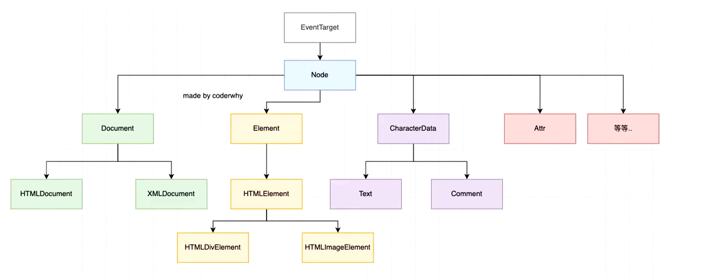
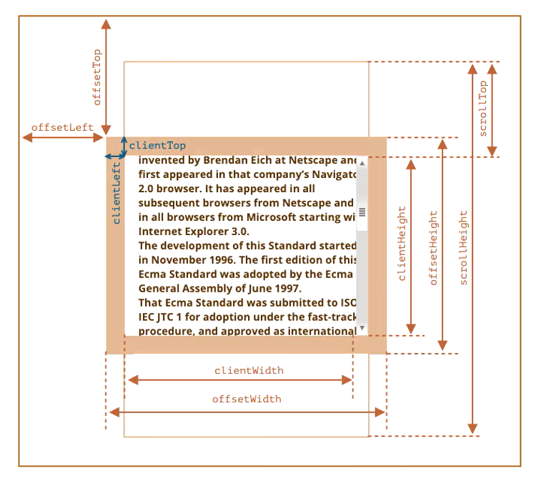
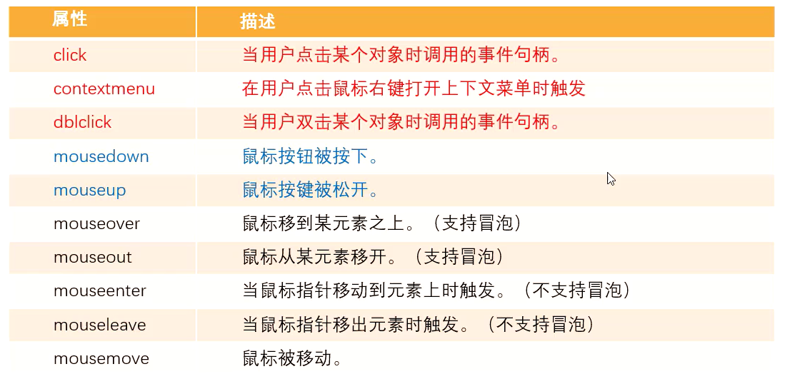
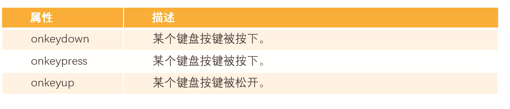
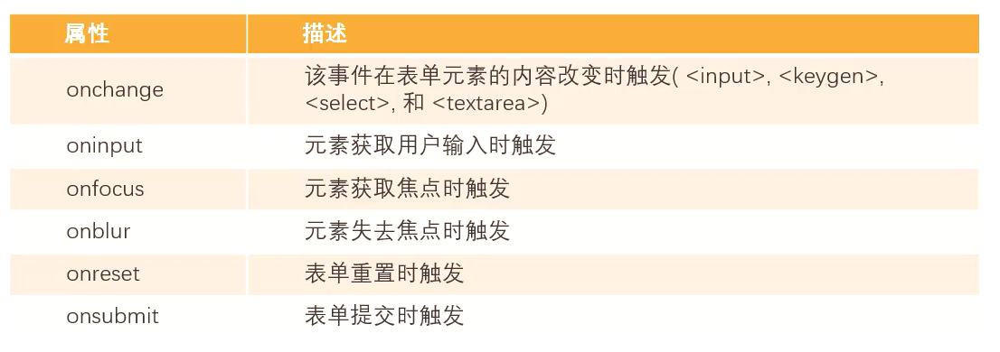
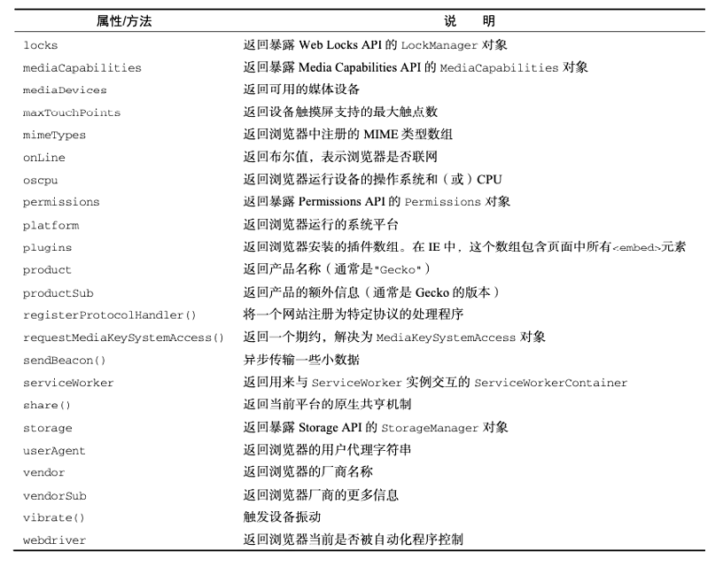
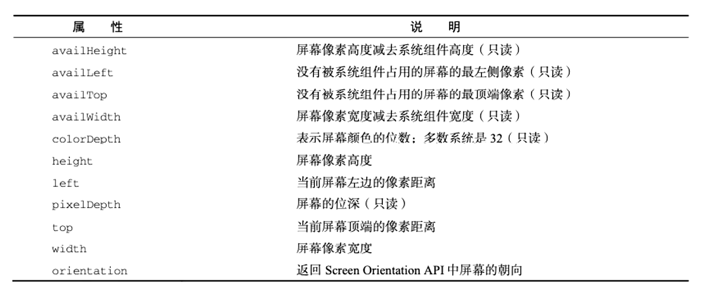

JavaScript基础
Js 的定义
维基百科对 Js 的定义:
JavaScript(通常缩写为 JS)是一种高级的、解释型的编程语言;JavaScript 是一门基于原型、头等函数的语言，是一门多范式的语言，它支持面向对象程序设计，指令式编程，以及函数式编程
Js 基本使用
noScript 元素
如果运行的浏览器不支持 JavaScript,那么我们如何给用户更好的提示呢?
针对早期浏览器不支持 JavaScript 的问题，需要一个页面优雅降级的处理方案,最终，
<noscript>不支持JavaScript,请切换浏览器</noscript>
Js 注释
- 单行注释 //单行注释
- 多行注释 /_多行注释 _/
- 文档注释(VSCode 中需要在单独的 JavaScript 文件中编写才有效)
1 | |
==运算符和===运算符
==运算符
==运算符检查其两个操作对象是否相等，返回一个布尔值结果。当比较双方数据类型不同时，它会尝试转换不同类型的操作数，并进行比较
类型相同时的特殊情况
- 对象（Object）：仅当两个操作数引用同一个对象时返回 true。
- 数字（Number）：如果两个操作数的值相同，则返回 true。+0 和 -0 被视为相同的值。如果任何一个操作数是 NaN，返回 false；所以，NaN 永远不等于 NaN。
1 | |
- 符号（Symbol）：仅当两个操作数引用相同的符号时返回 true。
1 | |
类型不相同时
- 如果其中一个操作数为 null 或 undefined，另一个操作数也必须为 null 或 undefined 以返回 true。否则返回 false。
- 如果其中一个操作数是对象，另一个是原始值，则将对象转换为原始值(ToPrimitive)。
_ 在这一步，两个操作数都被转换为原始值（字符串、数字、布尔值、符号和大整型中的一个）。剩余的转换将分情况完成。
_ 如果是相同的类型，使用步骤 1 进行比较。
_ 如果其中一个操作数是符号(Symbol)而另一个不是，返回 false。
_ 如果其中一个操作数是布尔值而另一个不是，则将布尔值转换为数字：true 转换为 1，false 转换为 0。然后再次对两个操作数进行宽松比较。
_ 数字与字符串：将字符串转换为数字。转换失败将导致 NaN，这将保证相等比较为 false。
_ 数字与大整型：按数值进行比较。如果数字的值为 ±∞ 或 NaN，返回 false。 * 字符串与大整型：使用与 BigInt() 构造函数相同的算法将字符串转换为大整型数。如果转换失败，返回 false。
===运算符
===运算符与 == 运算符之间最显著的区别是，严格相等运算符不尝试类型转换。相反，严格相等运算符总是认为不同类型的操作数是不同的，即只要类型不同进行 === 操作时，结果即为 false。
===比较规则
- 如果操作数的类型不同，则返回 false。
- 如果两个操作数都是对象，只有当它们指向同一个对象时才返回 true。
- 如果两个操作数都为 null，或者两个操作数都为 undefined，返回 true。
- 如果两个操作数有任意一个为 NaN，返回 false。
- 否则，比较两个操作数的值
作用域
在 ES5 之前没有块级作用域的概念,函数可以定义自己的作用域
- 全局作用域,全局可以使用
- 使用 var 定义的变量,无块级作用域(es5 之前),创建的变量都会作为 window 对象的属性保存
1 | |
- 使用 var 关键字声明的变量（ 比如
<font style="color:rgb(199, 37, 78);background-color:rgb(249, 242, 244);">var a = 1</font>），会在所有的代码执行之前被声明（但是不会赋值）。
1 | |
- for 循环没有自己的作用域
1 | |
- function 函数存在自己的作用域
1 | |
作用域的上下关系
当在函数作用域操作一个变量时，它会先在自身作用域中寻找，如果有就直接使用（就近原则）。如果没有则向上一级作用域中寻找，直到找到全局作用域；如果全局作用域中依然没有找到，则会报错 ReferenceError。
函数的声明提前（函数提升）
使用<font style="color:rgb(199, 37, 78);background-color:rgb(249, 242, 244);">函数声明</font>的形式创建的函数<font style="color:rgb(199, 37, 78);background-color:rgb(249, 242, 244);">function foo(){}</font>，会被声明提前。使用<font style="color:rgb(199, 37, 78);background-color:rgb(249, 242, 244);">函数表达式</font>创建的函数<font style="color:rgb(199, 37, 78);background-color:rgb(249, 242, 244);">var foo = function(){}</font>，不会被声明提前，所以不能在声明前调用。
1 | |
** **
对象
Objerct.keys
Objerct.keys 拿到对象的键的数组
1 | |
包装类型
JavaScript 的原始类型并非对象类型，所以从理论上来说，它们是没有办法获取属性或者调用方法的,JavaScript 为了可以使其可以获取属性和调用方法对其封装了对应的包装类型
- 根据原始值，创建一个原始类型对应的包装类型对象
- 调用对应的属性或者方法，返回一个新的值;
- 创建的包装类对象被销毁;
通常 JavaScript 引擎会进行很多的优化，它可以跳过创建包装类的过程在内部直接完成属性的获取或者方法的调用
DOM
DOM:文档对象模型(DocumentObject Model),简称 DOM，将页面所有的内容表示为可以修改的对象
DOM 类型继承图

:::info
在 DOM 的继承体系中，Document和Element看似 “平级” 继承自Node，这和直观理解有所不同，原因如下：
从 DOM 规范设计角度
DOM 将文档结构抽象为树形结构，Node是所有节点的抽象基类，它定义了节点共有的属性（如nodeName、nodeValue等）和方法（如appendChild等） 。Document和Element都是不同类型的节点，它们虽然在文档中的角色和功能不同，但都是基于Node这个最基础的抽象概念进行派生的。
从功能和用途角度
Document代表整个文档，是 DOM 树的根，它主要用于从整体层面操作文档，比如创建新的Element、Text节点，通过getElementById等方法查找元素等。它是访问和操作整个文档结构的入口。Element表示文档中的具体元素，像<div>、<p>、<img>等 HTML 标签对应的对象，它侧重于定义元素相关的属性（如className、id等）和方法（如setAttribute等），用于操作元素自身的特性、样式和行为等。
虽然在文档中Document包含了Element，但在 DOM 继承体系设计上，它们都是Node的具体派生类型，各自负责不同层面的功能，这种设计使得 DOM 结构更加清晰、模块化，便于开发者理解和使用。
:::
document 对象
Document 节点表示的整个载入的网页，它的实例是全局的 document 对象
- 对 DOM 的所有操作都是从 document 对象开始的;
- 它是DOM 的 入口点，可以从 document 开始去访问任何节点元素;
对于最顶层的 html、head、body 元素，我们可以直接在 document 对象中获取到:
- html 元素:=document.documentElement
- body 元素:=document.body
- head 元素:=document.head
- 文档声明:= document.doctype
如果我们获取到一个节点(Node)后，可以根据这个节点去获取其他的节点我们称之为节点之间的导航
- 父节点:parentNode
- 前兄弟节点:previousSibling
- 后兄弟节点:nextSibling
- 子节点:childNodes
- 第一个子节点:firstChild
- 最后一个子节点:lastChild
1 | |
element(元素)之间的导航
- 父元素:parentElement
- 前兄弟节点:previousElementSibling
- 后兄弟节点:nextElementSibling
- 子节点:children
- 第一个子节点:firstElementChild
- 最后一个子节点:lastElementChild
1 | |
Element 元素
attribute
浏览器在解析 HTML 元素时，会将对应的 attribute 也创建出来放到对应的元素对象上
- 比如 id、class 就是全局的 attribute，会有对应的 id、class 属性
- 比如 href 属性是针对 a 元素的，type、value 属性是针对 input 元素的;
属性 attribute 的分类:
- 标准的 attribute:某些 attribute 属性是标准的，比如 id、class、href、type、value 等;(在对应的对象模型中都有对应的 property)
- 非标准的 attribute:某些 attribute 属性是自定义的，比如 age、height 等
对于所有的 attribute 访问都支持如下的方法:
- elem.hasAttribute(name)- 检查特性是否存在。
- elem.getAttribute(name)- 获取这个特性值,
- elem.setAttribute(name, value)- 设置这个特性值。
- elem.removeAttribute(name)- 移除这个特性。
- attributes:attr 对象的集合，具有 name、value 属性:
:::info
attribute 具备以下特征:
- 它们的名字是大小写不敏感的(id 与 ID 相同)。
- 它们的值总是字符串类型的。
:::
property
对于标准的 attribute，会在 DOM 对象上创建与其对应的 property 属性
在大多数情况下，它们是相互作用的
- 改变 property，通过 attribute 获取的值，会随着改变;
- 通过 attribute 操作修改，property 的值会随着改变;
除非特别情况，大多数情况下，设置、获取 attribute，推荐使用property的方式:
- 这是因为它默认情况下是有类型的;
class 和 style
有时候我们会通过 JavaScript 来动态修改样式，这个时候我们有两个选择
- 在 CSS 中编写好对应的样式,动态的添加 class
- 动态的修改 style 属性:
elem.classList 是一个特殊的对象(可迭代,for of):
- 添加一个类 elem.classList.add (class)
- 移除一个类 elem.classList.remove(class):
- 添加/移除类,存在就移除它,如果类不存在就添加类 elem.classList.toggle(class)
- 检查给定类，返回 true/false。elem.classList.contains(class)
如果我们需要读取样式:
- 对于内联样式，是可以通过 style.*的方式读取到的;
- 对于 style、css 文件中的样式，是读取不到的;这个时候，我们可以通过 getComputedstyle 的全局函数来实现:
console.log(getComputedStyle(boxEl).backgroundColor);
元素操作
** 插入元素:**
- 直接 innerHTML 插入
- 创建 DOM 对象
1 | |
:::info
– 在 node 末尾 插入节点或字符串，
node.append(…nodes or strings)
– 在 node 开头 插入节点或字符串
node.prepend(…nodes or strings)
– 在 node 前面 插入节点或字符串,
node.before(…nodes or strings)
–在 node 后面 插入节点或字符串
node.after(…nodes or strings)
– 将 node 替换为给定的节点或字符串。
node.replaceWith(…nodes or strings)
:::
移除和复制元素
- 移除元素我们可以调用元素本身的 remove 方法
- 如果我们想要复制一个现有的元素，可以通过 cloneNode 方法
- 可以传入一个 Boolean 类型的值，来决定是否是深度克隆
- 深度克隆会克隆对应元素的子元素，否则不会克隆对应元素的子元素
元素的大小,滚动

- clientWidth:contentWith+padding(不包含滚动条)
- clientHeight: contentHeight+padding
- clientTop:border-top 的宽度
- clientLeft:border-left 的宽度
- offsetWidth:元素完整的宽度
- offsetHeight:元素完整的高度
- offsetLeft:距离父元素的 x
- offsetHeight:距离父元素的 y
- scrollHeight:整个可滚动的区域高度
- scrollTop:滚动部分的高度
window 的大小,滚动
widow 的 width,height:
- innerWidth、innerHeight:获取 window 窗囗的宽度和高度(包含滚动条)
- outerWidth、outerHeight:获取 window 窗口的整个宽度和高度(包括调试工具、工具栏)
- documentElement.clientHeight、documentElement.clientWidth:获取 html 的宽度和高度(不包含滚动条)
window 的滚动:
- x 轴上滚动的位置:scrollX(pageXOffset)
- y 轴上滚动的位置:scrollY(pageYOffset)
- scrollBy(x,y):将页面滚动至 相对于当前位置的(x,y),位置;
- scrollTo(pageX,pageY)将页面滚动至 绝对坐标;
事件
事件监听
如何进行事件监听
- 事件监听方式一:在 script 中直接监听(很少使用)
- 事件监听方式二:DOM 属性，通过元素的 on 来监听事件;
- 事件监听方式三:通过 EventTarget 中的 addEventListener 来监听;
鼠标事件
- click – 当鼠标点击一个元素时(触摸屏设备会在点击时生成)
- mouseover/mouseout –当鼠标指针移入/离开一个元素时,
- mousedown/mouseup–当在元素上按下/释放鼠标按钮时。
- mousemove–当鼠标移动时。
键盘事件:
- keydown 和 keyup – 当按下和松开一个按键时,
表单(form)元素事件:
- submit – 当访问者提交了一个
- focus – 当访问者聚焦于一个元素时，例如聚焦于 。
Document 事件:
- DOMContentLoaded –当 HTML 的加载和处理均完成，DOM 被完全构建完成时。
CSS 事件:
- transitionend–当一个 CSS 动画完成时。
事件冒泡,捕获
事实上对于事件有一个概念叫做事件流，为什么会产生事件流呢?
当我们在浏览器上对着一个元素点击时，你点击的不仅仅是这个元素本身,这是因为我们的 HTML 元素是存在父子元素叠加层级的;
- 我们会发现默认情况下事件是从最内层的 span 向外依次传递的顺序，这个顺序我们称之为事件冒泡(EventBubble)
- 事实上，还有另外一种监听事件流的方式就是从外层到内层(body->span)，这种称之为事件捕获(Event Capture)
事件对象 Event
当一个事件发生时，就会有和这个事件相关的很多信息,那么这些信息会被封装到一个 Event 对象中，这个对象由浏览器创建，称之为event 对象
常见 event 的属性
- type:事件的类型;
- target:当前事件发生的元素
- currentTarget:当前处理事件的元素;
- eventPhase:事件所处的阶段
- offsetX、offsetY:事件发生在元素内的位置;
- clientX、clientY:事件发生在客户端内的位置
- pageX、pageY:事件发生在客户端相对于 document 的位置:
- screenX、screenY:事件发生相对于屏幕的位置,
1 | |
常见的方法
- preventDefault:取消事件的默认行为，
- stopPropagation:阻止事件的进一步传递(冒泡或者捕获都可以阻止)
在函数中，我们也可以通过 this 来获取当前的发生元素,这是因为在浏览器内部，调用 event handler 是绑定到当前的 curentTarget 上的
:::info
css 属性也可以禁止鼠标交互事件
pointer-events:none
:::
EventTarget
- 所有的节点、元素都继承自 EventTarget,事实上 Window 也继承自 EventTarget;
- EventTarget 是一个 DOM 接口，主要用于添加、删除、派发 Event 事件
EventTarget 常见的方法
- addEventListener:注册某个事件类型以及事件处理函数;
- removeEventListener:移除某个事件类型以及事件处理函数;
- dispatchEvent:派发某个事件类型到 EventTarget 上;
1 | |
事件委托
事件冒泡在某种情况下可以帮助我们实现强大的事件处理模式 事件委托模式(也是一种设计模式)
那么这个模式是怎么样的呢?
- 因为当子元素被点击时，父元素可以通过冒泡可以监听到子元素的点击
- 并且可以通过 event.target 获取到当前监听的元素,
1 | |
1 | |
常见事件
MDN 文档:https://developer.mozilla.org/zh-CN/docs/Web/Events
鼠标事件:

mouseenter 和 mouseleave
- 不支持冒泡
- 进入子元素依然属于在该元素内，没有任何反应
mouseover 和 mouseout
- 支持冒泡
- 进入元素的子元素时先调用父元素的 mouseout,再调用子元素的 mouseover
- 因为支持冒泡，所以会将 mouseover 传递到父元素中:
1 | |
键盘事件

事件的执行顺序是 onkeydown、onkeypress、onkeyup
- down 事件先发生,发生在按键被按下.
- press 发生在文本被输入;
- up 发生在文本输入完成;
我们可以通过 key 和 code 来区分按下的键:
- code:“按键代码”(“KeyA”，”ArrowLeft”等)，特定于键盘上按键的物理位置。
- key:字符(“A”，“a”等)，对于非字符(non-character)的按键，通常具有与 code 相同的值。)
表单事件

** 文档加载事件**
- DOMContentLoaded:浏览器已完全加载 HTML，并构建了 DOM 树，但像
和样式表之类的外部资源可能尚未加载完成。
- load:浏览器不仅加载完成了 HTML，还加载完成了所有外部资源:图片，样式等。
动画结束事件
transitionend:事件会在 CSS 过渡完成的时候触发。如果过渡在完成前就被移除
文档可见性
当用户导航到新页面、切换标签页、关闭标签页、最小化或关闭浏览器，或者在移动设备上从浏览器切换到不同的应用程序时，该事件就以为的状态触发。(可用于轮播图等定时器的自动清除与创建)
1 | |
BOM
BOM:浏览器对象模型(Browser Object Model)简称 BOM，由浏览器提供的用于处理文档(document)之外的所有内容的其他对象,比如 navigator、location、history 等对象;我们可以将 BOM 看成是连接 JavaScript 脚本与浏览器窗口的桥梁
BOM 主要包括的对象模型
- window:包括全局属性、方法，控制浏览器窗口相关的属性、方法;
- location:浏览器连接到的对象的位置(URL);
- history:操作浏览器的历史;
- navigator:用户代理(浏览器)的状态和标识(很少用到)
- screen:屏幕窗口信息(很少用到);
定时器
- setTimeout 允许我们将函数推迟到一段时间间隔之后再执行。
- setlnterval 允许我们重复运行一个函数，从一段时间间隔之后开始运行，之后以该时间间隔连续重复运行该函数。
- clearTimeout:取消 setTimeout 的定时器;
- clearInterval:取消 setInterval 的定时器;
:::info
如果提前定义好的定时器 let timer=null,在后面去接收 timer=setlnterval(fun,time),在清除定时器的时候一定要将 timer 重新赋为 null,clearInterval(timer);timer=null
:::
全局对象 window
window 对象在浏览器中可以从两个视角来看待:
视角一:全局对象。
- 我们知道 ECMAScript 其实是有一个全局对象的
- 这个全局对象在 Node 中是 global
- 在浏览器中就是 window 对象;
视角二:浏览器窗口对象。
- 作为浏览器窗口时，提供了对浏览器操作的相关的 API;
window 对象的作用
- 第一包含大量的属性:localStorage、console、location、history、screenX、scrolX…
- 第二包含大量的方法:alert、close、scrollTo、open…
- 第三:包含大量的事件:focus、blur、load、hashchange…
- 第四:包含从 EventTarget 继承的方法，addEventListener、removeEventlistener、dispatchEvent 方法
MDN 文档:https://developer.mozilla.org/zh-CN/docs/Web/API/Window
location 对象
location 对象用于表示 window 上当前链接到的 URL 信息。
**常见的属性: **
- href: 当前 window 对应的超链接 URL, 整个 URL;
- protocol: 当前的协议;
- host: 主机地址;
- hostname: 主机地址(不带端口);
- port: 端囗;
- pathname: 路径;
- search: 查询字符串;
- hash: 哈希值;
- username:URL 中的 username(很多浏览器已经禁用)
- password:URL 中的 password(很多浏览器已经禁用)
location 有如下常用的方法:
- assign:赋值一个新的 URL，并且跳转到该 URL 中;
- replace:打开一个新的 URL，并且跳转到该 URL 中(不同的是不会在浏览记录中留下之前的记录);
- reload:重新加载页面，可以传入一个 Boolean 类型;
URLSearchParams
URLSearchParams 定义了一些实用的方法来处理 URL 的查询字符串。
- 可以将一个字符串转化成 URLSearchParams 类型:
- 也可以将一个 URLSearchParams 类型转成字符串;
URLSearchParams 常见的方法有如下:
- get:获取搜索参数的值;
- set:设置一个搜索参数和值;
- append:追加一个搜索参数和值;
- has:判断是否有某个搜索参数;
MDN:https://developer.mozilla.org/zh-CN/docs/Web/API/URLSearchParams
1 | |
history 对象
history 对象允许我们访问浏览器曾经的会话历史记录。
属性:
- length:会话中的记录条数;
- state:当前保留的状态值;
方法:
- back():返回上一页，等价于 history.go(-1);
- forward():前进下一页，等价于 history.go(1);
- go():加载历史中的某一页;
- pushState():打开一个指定的地址:
- replaceState():打开一个新的地址，并且使用 replace;
1 | |
navigator 和 screen
navigator 对象表示用户代理的状态和标识等信息。

screen 主要记录的是浏览器窗口外面的客户端显示器的信息:

JSON
JSON 是一种重要的数据格式，它并不是编程语言，而是一种在服务器和客户端之间传输的数据格式,JSON 的全称是 JavaScript Object Notation(JavaScript 对象符号)
JSON 被使用的场景
- 网络数据的传输 JSON 数据
- 项目的某些配置文件:
- 非关系型数据库(NoSQL)将 json 作为存储格式
JSON 的顶层支持三种类型的值:
- 简单值:数字(Number)、字符串(String，不支持单引号)、布尔类型(Boolean)、null 类型;
- 对象值:由 key、value 组成，key 是字符串类型，并且必须添加双引号，值可以是简单值、对象值、数组值;
- 数组值:数组的值可以是简单值、对象值、数组值;
序列化和反序列化
某些情况下我们希望将 JavaScript 中的复杂类型转化成 JSON 格式的字符串，这样方便对其进行处理:
- 比如我们希望将一个对象保存到 localStorage 中;但是如果我们直接存放一个对象，这个对象会被转化成[object Object]格式的字符串，并不是我们想要的结果
- stringify 方法:将 JavaScript 类型转成对应的 JSON 字符串;
- parse 方法:解析 JSON 字符串，转回对应的 JavaScript 类型;
1 | |